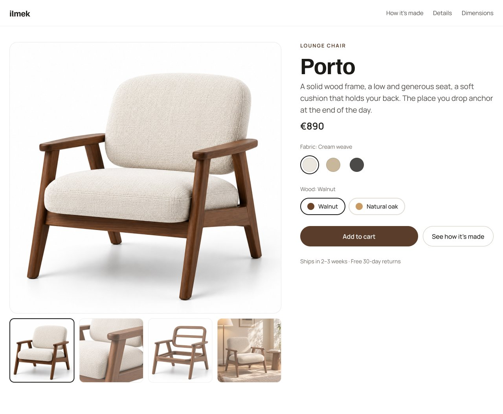
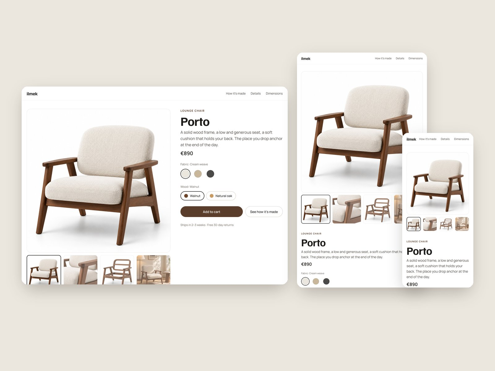
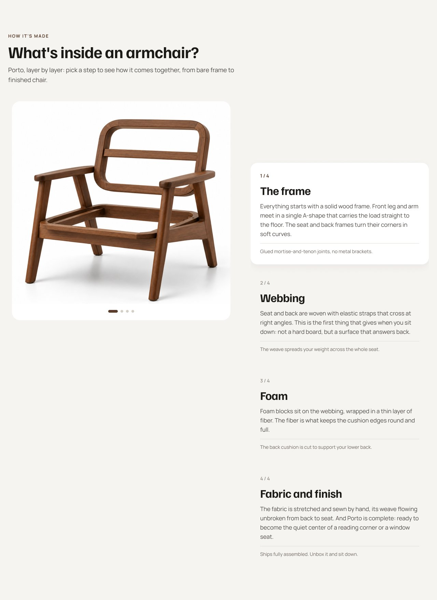
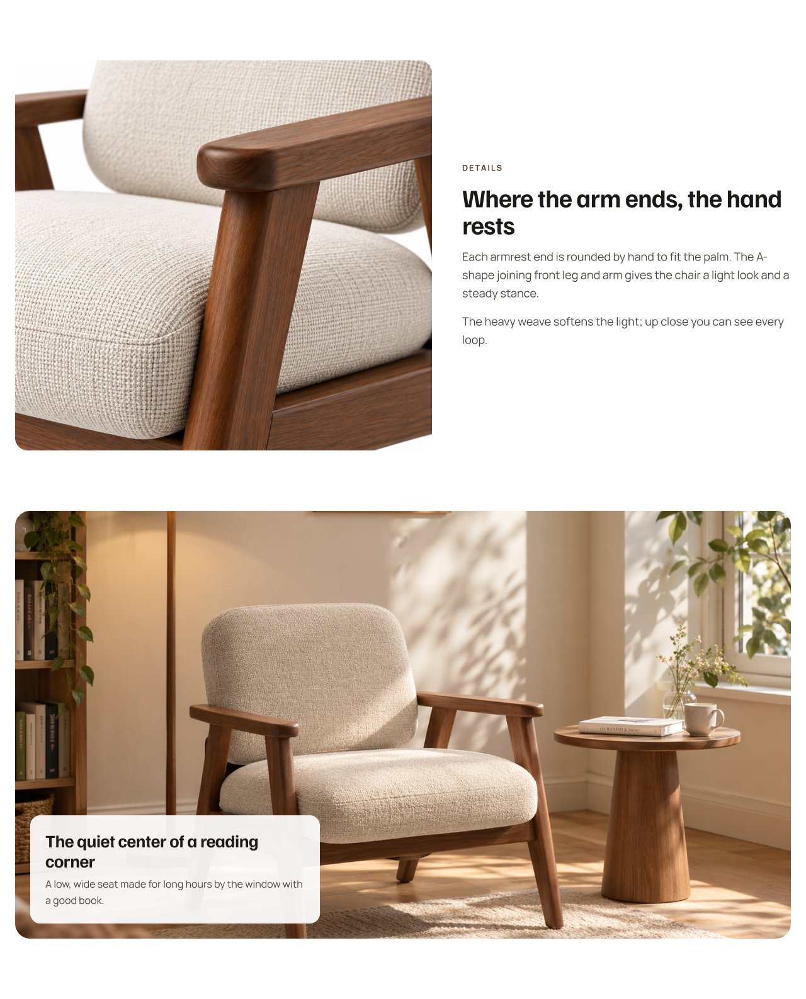
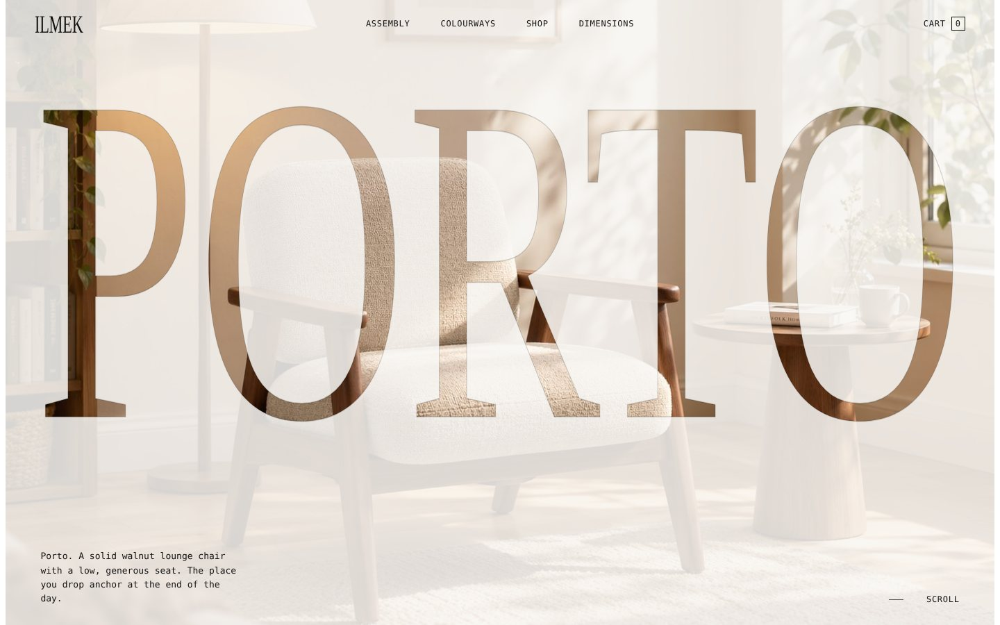
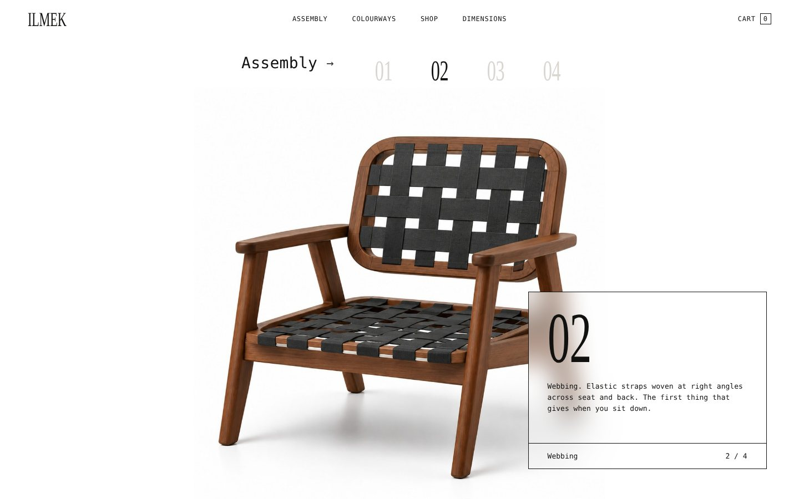
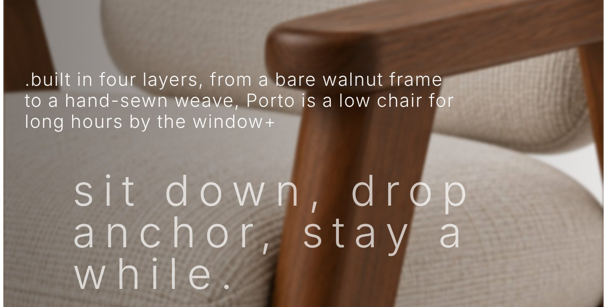
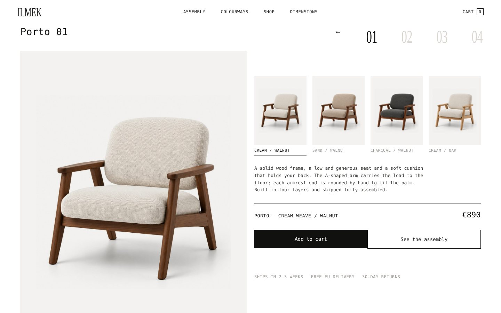

First screen
Everything you need to decide, up front
The gallery mixes product, detail and room shots. Fabric and wood choices sit right under the price, and a second button jumps straight to how the chair is made.
Brand & product page · 2026
A product detail page for Porto, a walnut lounge chair by ilmek, a fictional furniture studio. Designed in Figma for desktop, tablet and mobile, then built as a live, scroll-driven site.

The brand
Ilmek is Turkish for a loop, the small, patient stitch behind a hand-made piece. The studio makes a short range of solid-wood furniture and sells it online, so its website has to do a showroom’s job: let people see the material up close and understand how each piece is made.
The product
Porto is the studio’s lounge chair: a solid walnut frame, a low, generous seat and a soft cushion. Porto means harbour, the place you drop anchor at the end of the day, and that idea runs through the copy.
The brief
Design a product page for one armchair that sells the craft, not just the look. A premium chair needs to show why it costs what it costs.
Desktop design shown. Tablet and mobile keep the same order, stacked into one column.

The gallery mixes product, detail and room shots. Fabric and wood choices sit right under the price, and a second button jumps straight to how the chair is made.

The chair is explained in four layers: frame, webbing, foam and fabric. Seeing the build answers the price question before the visitor asks it.

A hand-rounded armrest in close-up shows the material. The reading-corner shot that follows gives scale and mood.
To show how the page should feel in motion, I turned the design into a live site, built with Claude as my coding partner.



